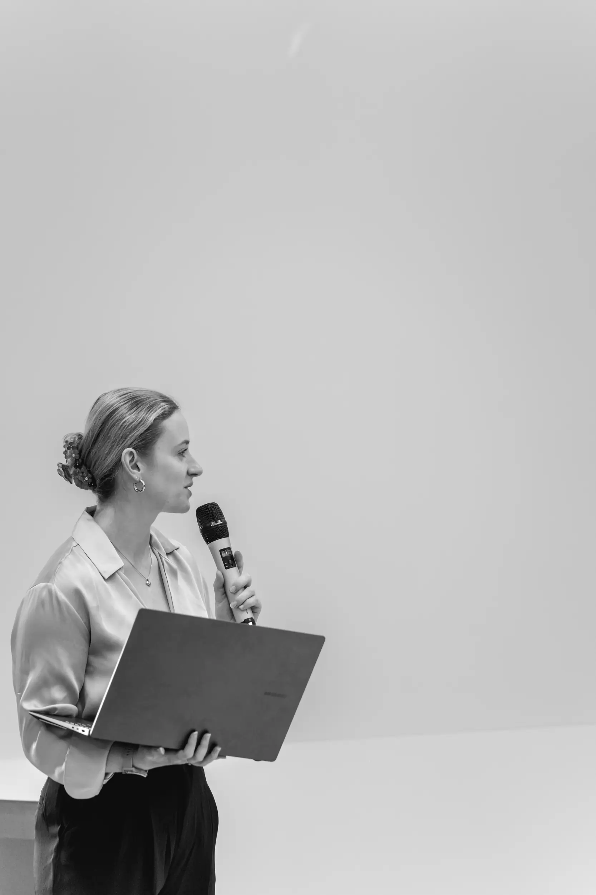

Jeg er en nysgjerrig, kreativ og kritisk designer med interesse for brukeropplevelse og kunst.
Interessen for UX kom lenge før jeg visste at det fantes et eget fag for det. Jeg har alltid vært typen som sender inn forslag til forbedringer når jeg oppdager ting som ikke fungerer på apper eller nettsider.
Det som motiverer meg mest er å forstå hvordan folk tenker, hva som skaper friksjon og hvordan små endringer kan gjøre en opplevelse bedre. Jeg liker også å utforske ny teknologi og se hvordan den påvirker måten vi bruker digitale produkter på.
Ved siden av design har jeg en stor interesse for visuell historiefortelling, og bruker mye tid på å tegne og male.
Ellers finner du meg som oftest ute i skogen med en hund på slep.
Last ned CV